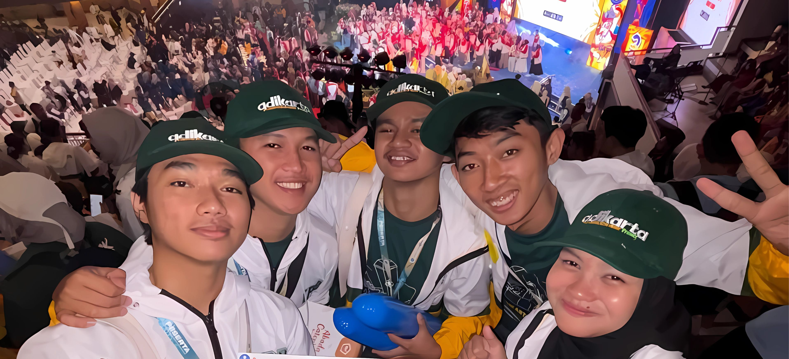
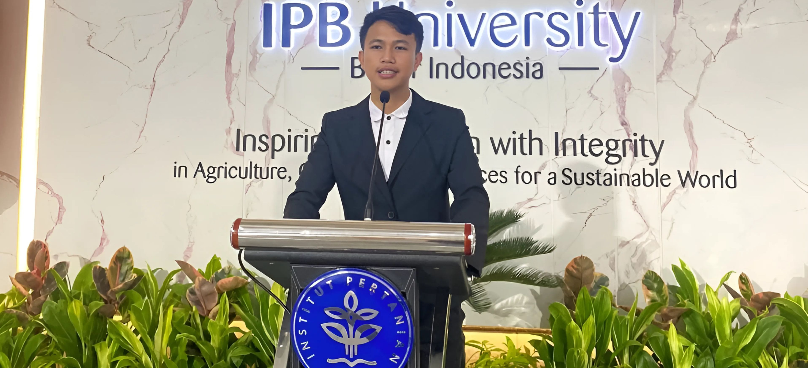
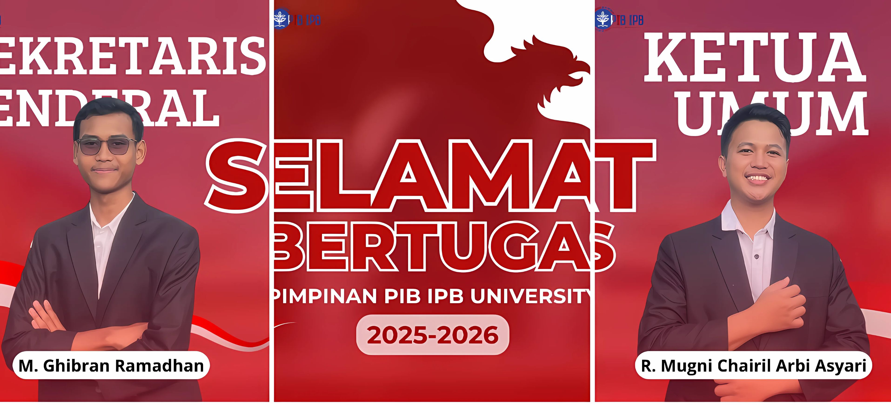
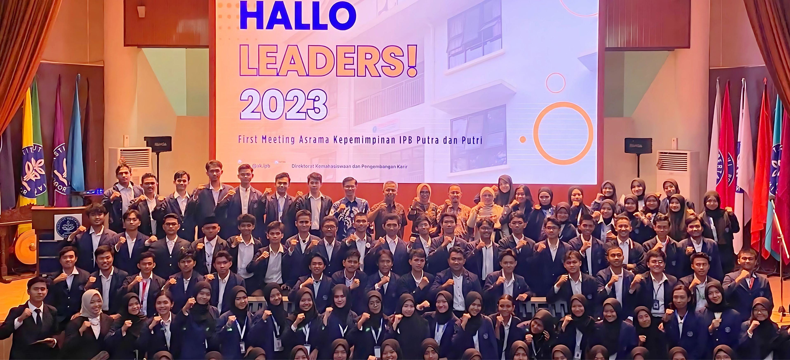
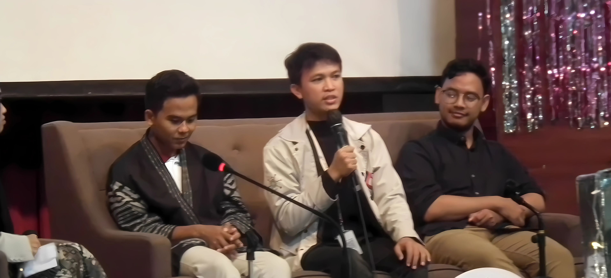

PIMNAS merupakan kegiatan yang diselenggarakan oleh Kementerian Pendidikan, Kebudayaan, Riset, dan Teknologi dengan judul" REFORMIS AGRICULTURE: MENILISIK KAMPUNG ADAT URUG DALAM MEMPERTAHANKAN BUDAYA KERAJAAN PADJAJARAN SEBAGAI REVITALISASI PERTANIAN MODERN"

Memimpin 203 pengurus BEM PKU dan mengelola 90+ program kerja di bidang pengembangan, pelayanan, dan advokasi mahasiswa. Berhasil menyelenggarakan Passion X Festival Mahasiswa, acara terbesar PKU dengan 4.272 peserta lintas fakultas dan organisasi.

Menjabat sebagai Ketua Pengawal Ideologi Bangsa, organisasi mahasiswa tingkat pusat IPB yang berperan sebagai penghubung antara kampus dan organisasi eksternal. Berhasil menyelenggarakan Seminar Pinjaman Online dengan menghadirkan narasumber nasional dari DPR RI Komisi XI, OJK, Bareskrim Polri, Kementerian Kominfo, dan Direktur Ekonomi Digital.
.jpg)
Menjabat sebagai Ketua Humas dalam Seminar Nasional bertajuk "Melawan Ancaman Judi Online dan Pinjaman Online Ilegal" yang diselenggarakan di Auditorium IPB University pada 29 Juli 2024. Bertanggung jawab atas strategi komunikasi, publikasi acara, dan koordinasi media, serta berhasil menarik perhatian luas melalui kehadiran narasumber nasional seperti Prof. Arif Satria (Rektor IPB) dan H. Fauzi Amro, M.Si (Anggota DPR RI Komisi XI).
.jpg)
Menjabat sebagai Pengurus Forum OSIS Jawa Barat, serta diundang secara resmi untuk menghadiri dan memberikan kontribusi dalam agenda Laporan Pertanggungjawaban (LPJ) Forum Komunikasi OSIS Kota Bogor yang dilaksanakan di Gedung DPRD Kota Bogor.

Menjadi bagian dari Asrama Kepemimpinan, khususnya peminatan pengembangan kepemimpinan, dan dibina secara intensif melalui berbagai pelatihan karakter, manajemen diri, dan kepemimpinan strategis. Pembinaan ini membentuk kemampuan dalam berpikir kritis, mengambil keputusan, serta memimpin dengan baik
.jpg)
enjadi delegasi IPB University dalam ajang Satria Data SIC dengan mengangkat isu emisi gas rumah kaca, di mana Indonesia tercatat sebagai penyumbang tertinggi di Asia Tenggara pada 2022, dan menawarkan solusi melalui teknologi Smart Carbon Recycle (SCR) untuk menekan emisi CO₂ industri secara berkelanjutan.

Menjadi pemateri dalam Korpus Talkshow bertajuk “Eksistensi Ormawa di Tengah Kehidupan Kampus”, bersama Presiden Mahasiswa IPB dan Mahasiswa Berprestasi 3 IPB.Membahas peran organisasi mahasiswa (Ormawa) dalam membentuk karakter, kepemimpinan, dan kontribusi aktif mahasiswa di lingkungan kampus.
.jpg)
Telah menjadi pemateri dalam lebih dari 30 sesi pelatihan dan seminar di berbagai forum, dengan topik seputar personal branding, kepemimpinan, dan pengembangan karakter. Berkontribusi dalam membentuk generasi muda yang percaya diri, visioner, dan berintegritas